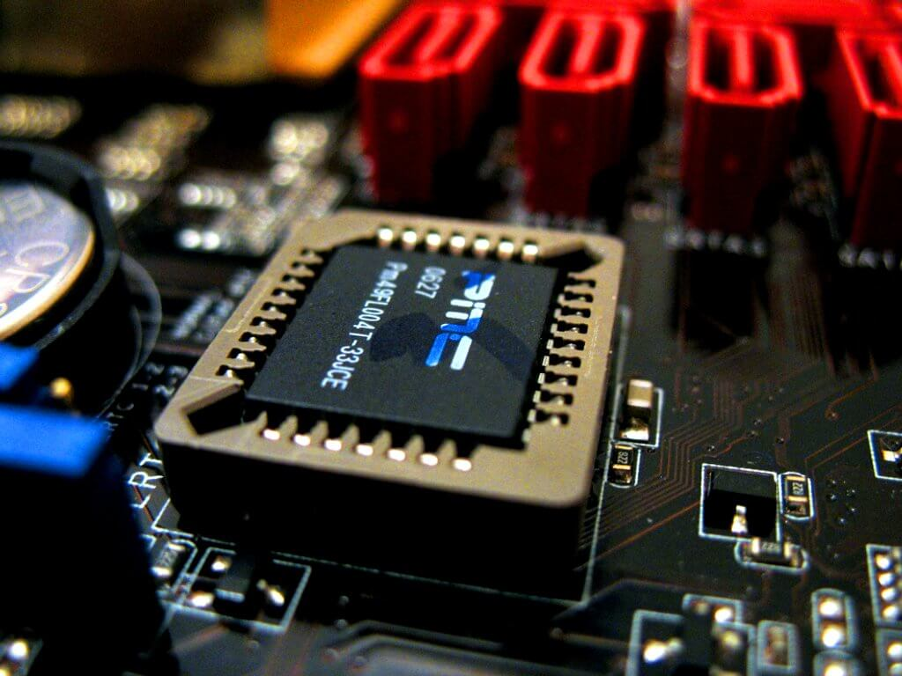

Esta é um dos primeiros componentes a serem ligados quando ligamos um computador. Ela é responsável por gerenciar os detalhes da inicialização do seu computador, checar se todos os componentes necessários estão ligados e funcionando. Além disso, a BIOS é responsável por monitorar a temperatura do computador.
